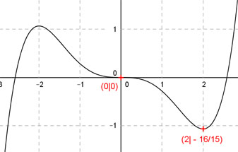

Aufgabe 109
Der Graph einer ganzrationalen Funktion 6. Grades
geht durch die Punkte (-1|4) und (2|49), hat in
(0|1) einen Wendepunkt mit waagerechter Tangente
und in (1|0) einen Tiefpunkt.
Wie lautet seine Funktionsgleichung?

Wie löse ich Matheaufgaben?
Steckbriefaufgaben
Sie sehen ein gelbes Eingabefeld und die
Schalter: Prüfen und Lösung.
Tragen Sie Ihr Ergebnis ein, prüfen Sie es
oder starten Sie eine Lösung.
Aufgabe 107 Der Graph einer punktsymmetrischen ganzrationalen Funktion 5. Grades hat in (0|0) einen Sattelpunkt und in (2|-16/15) einen Tiefpunkt. Wie lautet seine Funktionsgleichung? 
Aufgabe 108 Der Graph einer ganzrationalen Funktion 5. Grades geht durch (0|0), hat in (-1|-2/3) einen Wende- punkt mit der Steigung 1,25 und einen bei (-2|-4/3). Wie lautet seine Funktionsgleichung? f(x) = 0,25x5 + x4 + (5/3)x3
Aufgabe 109 Der Graph einer ganzrationalen Funktion 6. Grades geht durch die Punkte (-1|4) und (2|49), hat in (0|1) einen Wendepunkt mit waagerechter Tangente und in (1|0) einen Tiefpunkt. Wie lautet seine Funktionsgleichung?
Aufgabe 110 Der Graph einer ganzrationalen Funktion 6. Grades berührt die x-Achse im Nullpunkt, und hat in (1|1) und (-1|1) Wendepunkte mit waagerechten Tangenten. Wie lautet seine Funktionsgleichung? f(x) = x6 - x4 + 3x2
Aufgabe 111 Der Graph einer zu (0|0) punktsymmetrischen ganzrationalen Funktion 5. Grades hat in (1|1) die Steigung 0 und in (2|f(2)) einen Wendepunkt. Wie lautet seine Funktionsgleichung?

Aufgabe 112 Der Graph einer zu (0|0) punktsymmetrischen ganzrationalen Funktion 5. Grades hat in (0|0) die Tangente y = 7x und in(1|0) einen Wendepunkt. Wie lautet seine Funktionsgleichung? f(x) = x5 - 10x3 + 7x
Aufgabe 113 Der Graph einer zu (0|0) punktsymmetrischen ganzrationalen Funktion 5. Grades hat in (-1|1) einen Wendepunkt mit der Steigung 3. Wie lautet seine Funktionsgleichung?

Aufgabe 114 Der Graph einer zu (0|0) punktsymmetrischen ganzrationalen Funktion 5. Grades hat im Nullpunkt die Steigung 2 und in (-1|0) einen Wendepunkt. Wie lautet seine Funktionsgleichung? f(x) = ( /7)x5 - (20/7)x3 + 2x
Aufgabe 115 Der Graph einer ganzrationalen Funktion 5. Grades berührt die x-Achse bei 1 und 2, wechselt bei 3 das Vorzeichen und geht durch (0|24). Wie lautet seine Funktionsgleichung?

Aufgabe 116 Der Graph einer ganzrationalen Funktion 5. Grades geht durch den Punkt (0|1), berührt die x-Achse bei -5 und wechselt bei x = 1, -2 und -3 das Vorzeichen. Wie lautet seine Funktionsgleichung? f(x) = -(1/20)x5 - (7/75)x4 - (11/ )x3 - (58/75)x2 +(7/30) + 1
zurück